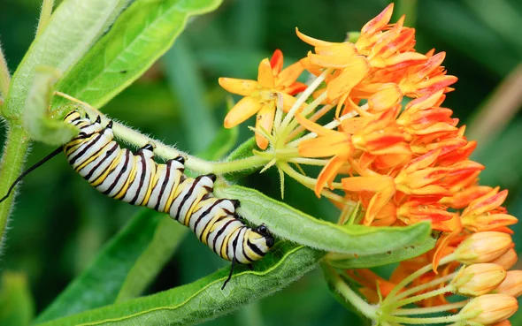
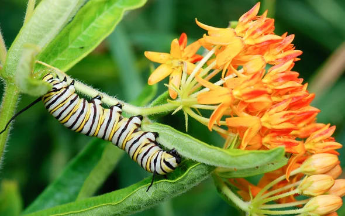
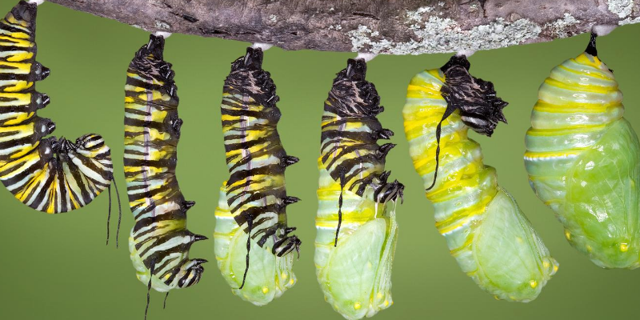
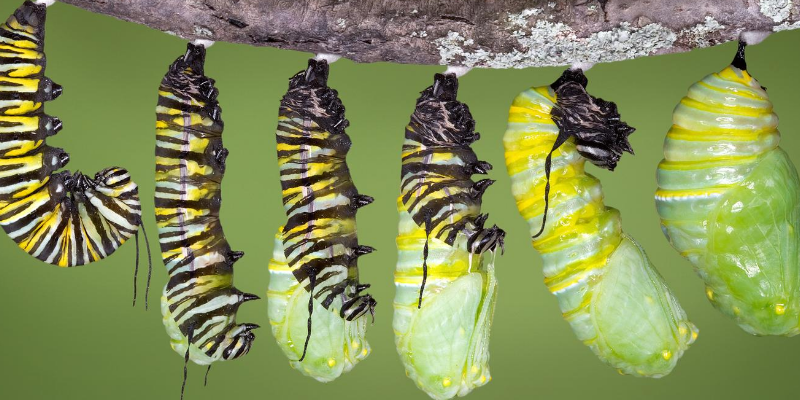

Mina the African Wild Dog
Hi, I am an African Wild Dog and my name is Mina. I live in a pack with my mother, my father, me and my two sisters(Melinie and Elle) and ten other wild dogs. Our leader is a female dog named Aliana. We are always hiding and running. We sometimes have to starve! We are losing our food because of the loss of their habitat. We are carnivores which means we eat meat. We hunt animals like antelopes on wildebeests. We don't see many packs in Africa. Hunters come and kill most of the packs or they lose their habitats. Mama always tells me that we have to believe in ourselves and keep going. We are one of the only species that care for the old, sick, and injured because for us family is family. There are only about 4,000 wild dogs in the wild. If we go extinct then there will be no dog species with four toes! We are one of a kind. We live for 10 to 13 years and weigh from 35 to 50 pounds! We are only found in Africa. We live in packs with an average of 10 members. 1 liter contains 16 puppies! The pubs get to eat before the alpha. We also are not picky eaters. We eat almost anything! We are in competition for food with lions because we both eat just about the same things. We are one of the most endangered animals in the world!
There are about 4,000 wild dogs like me on average! To tell the truth I am really scared. What if a hunter got my pack? What if we could not find enough food and we starved to death? What if we caught one of the bad diseases?I want some miracle to save us! Mama says we have to be our own miracle. Mama is always correct. One day we were walking through the woods when I saw something shiny. “Stop”, I barked, everyone stopped and I told them to avoid the trap. They all listened and then we heard barking and voices, then a buzzing sound filled the air along with the scent of cut wood. We ran fast down the stretch of the forest around the city. We hurried to find another safe forest before it got dark. We finally reached another forest but it was dark outside so we would have to make a temporary den. Mama told me and my two sisters we had to have to take care of one another while they were gone. So we huddled around ourselves and cuddled while mamma and papa scouted with the rest of the pack. We were starting to get restless, so since we were all bored, we just talked. The adults came back and they found a patch of grass then they made the den. We cuddled up and slept. In two weeks we would leave this pack and start our own great packs! I would want to be my pack leader but mama says its hard work so I have to try hard. Aliana teaches us how to hunt in the morning and I am the best!
Aliana says I will be the best pack member ever and I smile. She also pulls me aside and tells me I might become the pack leader. “Ding, help” Aliana cries out “I am stuck!”. I jump to see whats wrong and I see that it is only a net and I bite the net to save her.I am glad she is okay. We hurry back to the camp where my siblings ask if I am okay. I just nod. I thought about how close that was!. “Dinner”, Aliana’s voice rings through the trees. We bolt off in search of food and we spit up at the bend. Then around a tree I spot a wildebeest! I smile, Aliana will be proud. I bark to the pack which comes and we chase our prey. Finally the wildebeest got tired and slows down allowing us to advance. We capture our prey and feast! Aliana is very proud of me.
We then hear voices. We all expect to hear the buzz of the saw but this time we hear something different, something worse. “ Bam, bam, bam” the bullets are big and black flying over our head. We run. The hunters chase our pack aiming at us. Aliana barks and tells some of us to slack behind and go under their legs and run. She tells the rest of them to slack behind but go around them. We thankfully escape. The hunters are close on our tails, literally!. We go into a cave and they pass by. We run the other way, finally we reach home. I am more scared than ever. We go to bed but tonight I wake up, I crawl over to mama and Papa and snuggle in between them. I sleep peacefully for the rest of the night.In the morning we darted around our den and hid waiting for breakfast to visit us but none came. “We won’t get breakfast today” announced Aliana. “ Aww”.we all cried.
``Well” said mama “the hunters are killing all of them!” she continued” we won't survive long like this” Mama looked worried.I cuddled closer to her, she went on “ this forest has no food, I think..” she did not look happy about what she was going to say. “ I think we have to…” she trailed off. I knew she could not finish the sentence but before I could finish it for her Aliana did “leave” she said. I know.
We left the house but shortly after we heard voices. “ Not again me and my two sisters whined and rolled on the ground. “Get up and stop whining” mama ordered. “Get up and run, get up and hide” she sounded mad but not at us at the hunters. “Wait I say “ they dont” want us, they want some other animal called..” a painted hunter, we are not painted and no animal here is painted, we should help them. I start to trot of but mama grabs my tail, “No” she says “ we are the painted hunters, we just have to names" adds papa. “ Plus”, agrees mama, “Humans have no mercy on us, to them we dont look cute at all.” But they say all dogs are cute!My siblings are cute” Come my darling” says Aliana. Your mother is right” “Let me tell you a secret” says Aliana. “Only alpha dogs have puppies but your mother acted so much as your mother that she let you call her mom.” oh I say “ she loves me a lot and I dont want to leave my pack and start my own pack. I say “ You must” Aliana replies “Let's join the others. We ran with the pack and marked our territory and slept in the den. I crawled once again in between mama and papa. This time though mama sat up and curled around me snuggling me tight "Good night Mina”, she whispers softly into my ear. "You are my adorable". “My pack lived until the very end so did Aliana’s. But will our species? Will you save our species?


 

 
